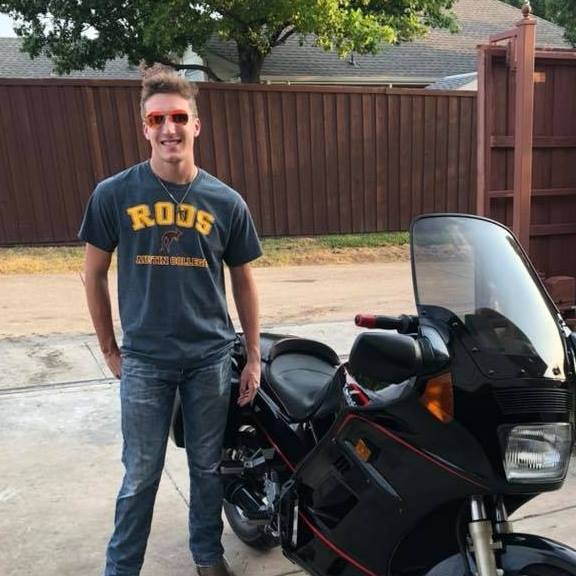

I am Eric Greilich and I am from Carrollton Texas here locally! Born and raised Texan, Aggies, cowboys, and Mavs fan! My major is CIS with an MIS minor. I am a Dallas Baptist Student in my senior year! Dallas Baptist
My favorite color is red, as you can see
"Would I rather be feared or loved? Easy. Both. I want people to be afraid of how much they love me.” — Michael Scott

I have a handful of favorite websites I use often, for school, work and personal hobbies! The first is personal favorite shopping site when it comes to new and used items for school or hobbies is Ebay of course! Another one I use frequently my not be my personal favorite but it is my school website, but nevertheless, use it frequently. I usually rent most of my books online as it saves money, and I don't need it after in most cases. I own an older motorcycle so when I need help I go the fourms for the bike as it has a weirdly large support group still. The last site I use for personal use is of course youtube for everything, for fun, for school, and work sometimes as well.